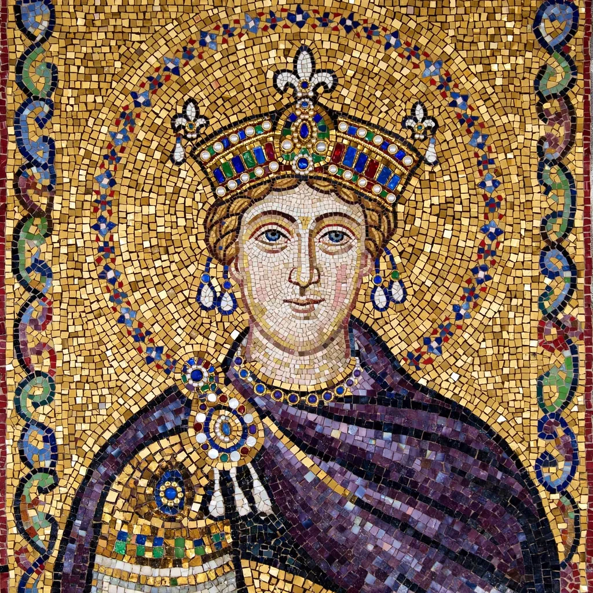

Anna Komnene
Anna Komnene (Greek: Ἄννα Κομνηνή; 1 December 1083 – c. 1153) was a Byzantine Greek princess and historian, the eldest daughter of Emperor Alexios I Komnenos. Her Alexiad, a history of her father's reign, is a principal source for the Byzantine Empire of the late eleventh and early twelfth centuries and for the First Crusade. She is often described as one of the first women historians of the Western world.

| Born | 1 December 1083, Constantinople |
|---|---|
| Died | c. 1153, Constantinople |
| Spouse | Nikephoros Bryennios the Younger |
| Father | Alexios I Komnenos |
| Mother | Irene Doukaina |
| Notable work | The Alexiad |
Life
Born in the Porphyra chamber of the imperial palace, Anna was betrothed as a child to Constantine Doukas and later married the historian and general Nikephoros Bryennios. Exceptionally well educated in Greek literature, philosophy, medicine and the sciences, she reportedly schemed to displace her brother John II in favour of her husband at their father's death in 1118; when the plot failed, she eventually withdrew to the convent of Kecharitomene.
The Alexiad
Completed around 1148, the Alexiad narrates Alexios I's reign (1081–1118): his wars against the Normans under Robert Guiscard and Bohemond, the Pechenegs and Seljuk Turks, and the arrival of the First Crusade. It is partisan in its hero's favour yet rich in detail on warfare, diplomacy and court life, and famously ambivalent about the Latin crusaders, whom Anna portrays as both formidable and barbarian.
Legacy
The Alexiad remains indispensable to historians of Byzantium and the Crusades, and Anna herself a striking example of the learned women of the Komnenian court.
See also
Al-Idrisi · Alexios I Komnenos · First Crusade · Byzantine Empire